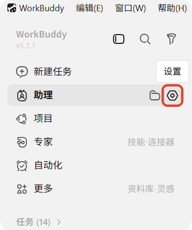
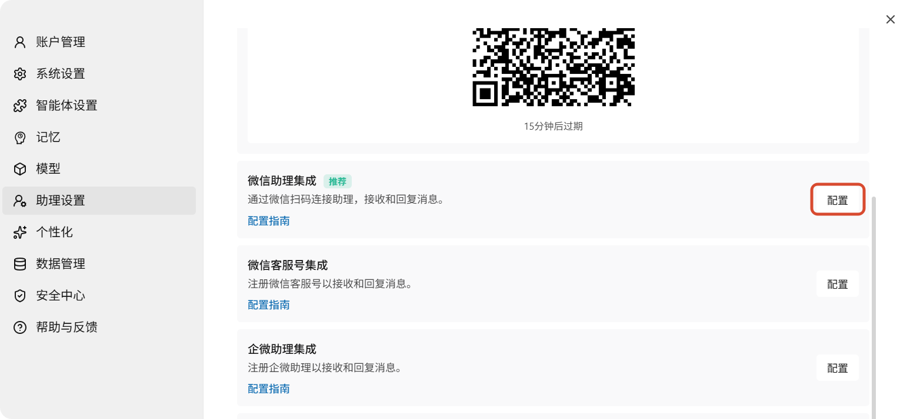
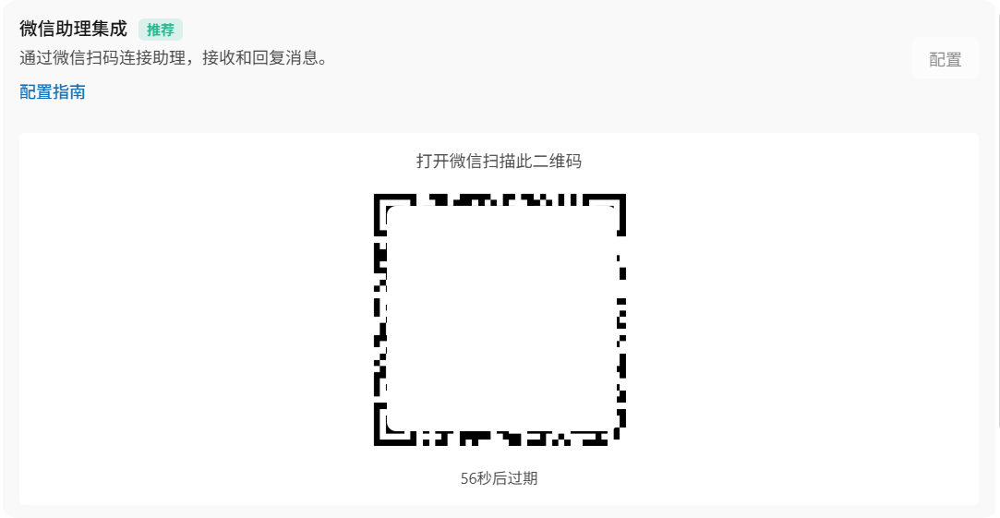
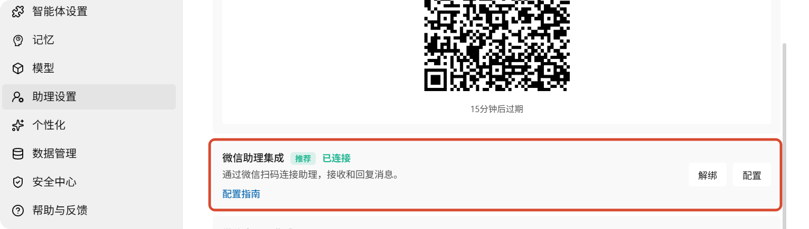

WorkBuddy 接入微信助理指南
接入微信助理让您可以通过手机微信远程控制电脑上的 WorkBuddy。在微信中发送任务指令，WorkBuddy 在电脑上自动执行，并将结果同步回微信聊天窗口。所有项目、文件、凭证和工具均使用您电脑本地的环境，无需额外配置。
微信助理能做什么
绑定微信助理后，您可以在微信中完成以下操作：
- 启动新的任务，或继续助理板块中未完成的会话
- 发送后续指令、回答 WorkBuddy 的追问、指导进行中的工作
- 批准命令执行、文件修改等需要确认的操作
- 查看任务输出、差异对比
- 当 WorkBuddy 完成任务或需要您的关注时，在微信中收到通知
设置前的准备
在开始绑定之前，请确认满足以下条件：
| 要求 | 说明 |
|---|---|
| WorkBuddy 版本 | macOS / Windows 上安装 WorkBuddy >= 4.6.4 |
| 微信版本 | 手机上已登录 微信 >= 8.0.70 |
| 账号一致性 | WorkBuddy 和微信使用同一账号登录（或已关联） |
| 网络连接 | 电脑和手机均能正常访问互联网 |
| WorkBuddy 运行中 | WorkBuddy 必须保持运行状态 |
提示
微信助理接入无需填写 App ID、App Secret 等开发凭证，只需扫码即可完成绑定。
连接微信助理
第一步：打开助理设置
- 打开 WorkBuddy
- 在左侧 助理 栏点击齿轮图标，进入「助理设置」

- 在集成列表中找到「微信助理集成」
- 点击右侧的「配置」按钮

第二步：生成绑定二维码
点击「配置」后，按钮会短暂显示为「绑定中...」，WorkBuddy 正在生成用于绑定的二维码。
第三步：扫码完成绑定
二维码生成后会直接显示在卡片下方。打开手机微信，扫描该二维码即可完成绑定。

注意
二维码有时效限制。如果二维码过期或扫码失败，请重新点击「配置」生成新的二维码。
第四步：确认绑定状态
扫码完成后，卡片状态会变为「已绑定」。如果后续需要更换账号，可以点击「解绑」后重新绑定。

使用场景与连接方式
WorkBuddy 微信助理支持以下几种使用场景：
日常办公电脑
连接您日常使用 WorkBuddy 的 Mac 或 Windows 电脑。当您离开工位时，可以通过微信远程访问相同的项目、文件和工作线程。
注意
如果电脑休眠、断网或关闭 WorkBuddy，远程访问将暂时中断。
建议设置：
- Mac 笔记本请保持打开并接通电源；如果合盖使用，建议外接显示器使电脑不休眠
- 可在 WorkBuddy 设置中开启锁屏远程，防止长时间任务被中断
专属常开主机
如果您的项目需要长期运行的任务（如定时巡检、持续集成监控等），可以使用一台专用的 Mac 或 Windows 电脑，在上面安装项目依赖、凭证、插件和工具，保持 WorkBuddy 持续运行。即使您的主电脑离线，微信助理仍然可以访问这台常开主机。
跨设备接续工作
微信助理支持与 WorkBuddy 桌面端无缝衔接：
- 在微信中发起一个任务后，可以回到电脑上的 WorkBuddy 查看完整的执行过程和结果
- 当您回到电脑前时，WorkBuddy 会在助理中显示微信中发起的会话，无需手动查找
- 您可以在电脑上继续追问、细化任务，或在微信中随时查看进度
说明
当微信消息到达时，WorkBuddy 会自动切换到 助理 标签页并加载对应的会话，无需手动切换。
微信消息类型
通过微信与 WorkBuddy 交互支持以下方式：
- 文字消息：发送自然语言任务指令
- 图片消息：发送截图或文档照片，WorkBuddy 可识别图中内容
- 文件消息：转发文件，WorkBuddy 可读取并分析
- 语音消息：发送语音指令（需微信语音转文字功能）
什么来自本地电脑
当您通过微信向 WorkBuddy 发送任务时，处理过程发生在您的电脑上：
| 来源 | 说明 |
|---|---|
| 手机微信 | 仅发送指令、批准操作和后续消息 |
| 您的电脑 | 提供 WorkBuddy 执行任务所需的全部环境 |
具体来说，WorkBuddy 使用您电脑上的：
- 项目与文件：所有仓库代码、本地文档均来自您的电脑
- Shell 命令：终端命令在您的电脑上执行，使用您本地的环境和依赖
- 凭证与权限：已登录的网站、Git 仓库、云服务等均使用您电脑上的凭证
- 插件与工具：已安装的插件、MCP 服务器、浏览器扩展、Computer Use 能力均可远程使用
- 安全策略：沙箱设置、操作审批规则仍然适用于远程发起的会话
常见问题
页面一直停留在「绑定中...」怎么办？
- 确认电脑上的 WorkBuddy 正在运行，且网络连接正常
- 关闭当前配置窗口后重新进入「微信助理集成」
- 如果问题仍然存在，重启 WorkBuddy 后重新绑定
扫码后没有显示「已绑定」怎么办？
- 确认扫码使用的是您希望绑定的微信账号
- 等待几秒钟让绑定状态同步
- 如果二维码已经失效，请点击「重试」生成新的二维码后再次扫码
微信里发消息没有响应怎么办？
- 确认电脑上的 WorkBuddy 仍在运行，且助理服务未关闭
- 返回「助理设置」检查微信助理集成状态是否仍为「已绑定」
- 如有必要，可先解绑后重新扫码绑定
微信助理和微信客服号有什么区别？
两者功能相同，都可以通过微信与 WorkBuddy 对话。微信助理是另一种绑定通道，绑定流程与微信客服号一致（扫码即可），您可以根据需要选择其中一种使用。
多个微信账号可以绑定同一台电脑吗？
WorkBuddy 当前一对一绑定。如果您需要切换微信账号，请先在「助理设置」中解绑当前账号，再使用新账号扫码绑定。